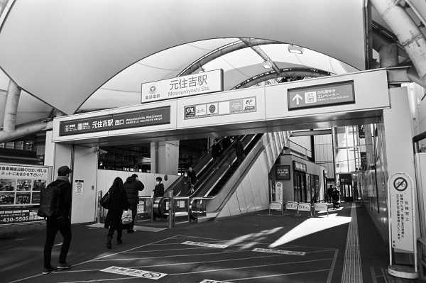
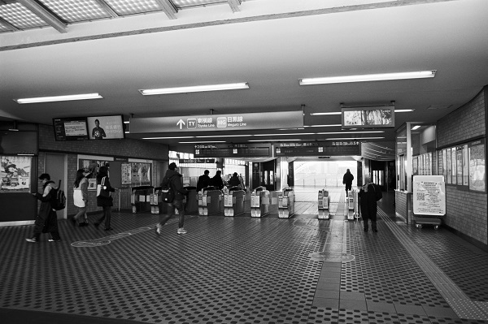
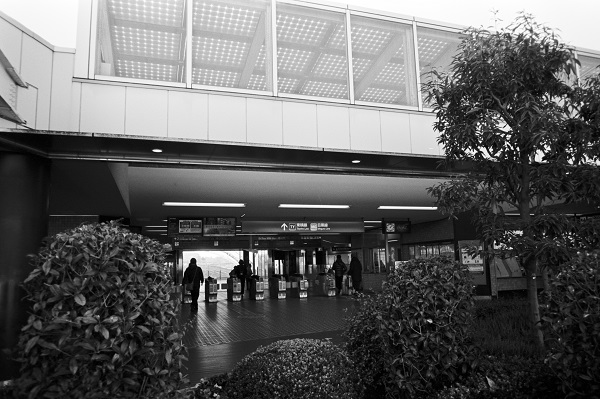
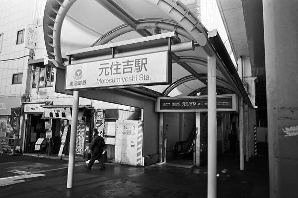

TY12_東急東横線 MG12_東急目黒線
TY_元住吉駅 Motosumiyoshi
武蔵小杉駅←← 東急東横線 →→日吉駅
武蔵小杉駅←← 東急目黒線 →→日吉駅

2019/2/3 ﾐﾉﾙﾀCLE ｶﾗ-ｽｺｰﾊﾟｰ25mm ｱｸﾛｽ

2019/2/3 ﾐﾉﾙﾀCLE ｶﾗ-ｽｺｰﾊﾟｰ25mm ｱｸﾛｽ

2019/2/3 ﾐﾉﾙﾀCLE ｶﾗ-ｽｺｰﾊﾟｰ25mm ｱｸﾛｽ

2019/2/3 ﾐﾉﾙﾀCLE ｶﾗ-ｽｺｰﾊﾟｰ25mm ｱｸﾛｽ
戻る ﾎｰﾑ